Veros模块化刀具设计软件(MBD-Modular Based Design software)
Veros是Walter从1993年起开始开发并逐步完善的非标刀具设计软件，经过多年发展，后来被引入到Sandvik SMS。该软件平台在SMS内部共享，但是其数据内容由各品牌(山高，瓦尔特，可乐满)独立填充。开发Veros的目的是提高刀具设计的效率以及统一性。
Veros软件使用反馈与优化
2017/12/20 SECO LOGO on drawing
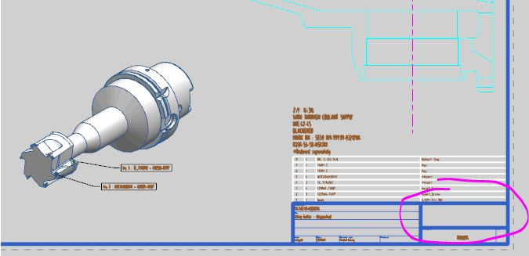
JAR 2017-12-20 fixed
2017/12/20 Copy issue for the drawing
We found when we copy the product from other's folder,the drawing can't be copied.
It is like this? Or there is something wrong inside?If someone has made the drawing, others can only copy the model but have to generate pieces of new drawings.
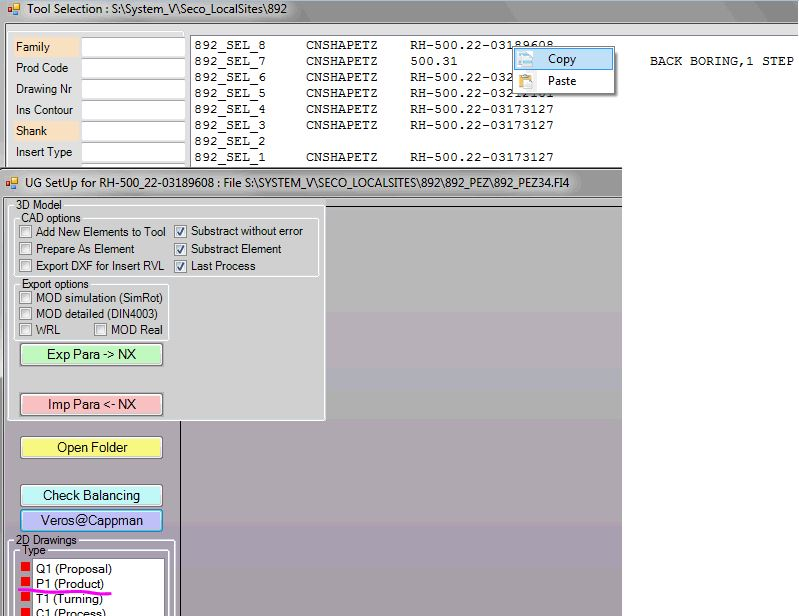
JAR 2017-12-20 fixed
for the drawing copy you need to first open the original drawing and use the button "save as model" then open the new one choose the format , copy the designation and drawing number then use the button "Load as model". you need to copy manually the drawing number and the tool designation on the new drawing. this is something we need to solve.
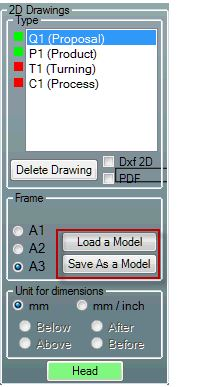
2017/12/18 Dimension callout for HSK100A
Please check dimension callout for HSK100, in Veros, the point is exactly on the backface.But when we go into NX,The dimension is slightly different from what we design.When we zoom it, find that the line of dimension is not on the backface.
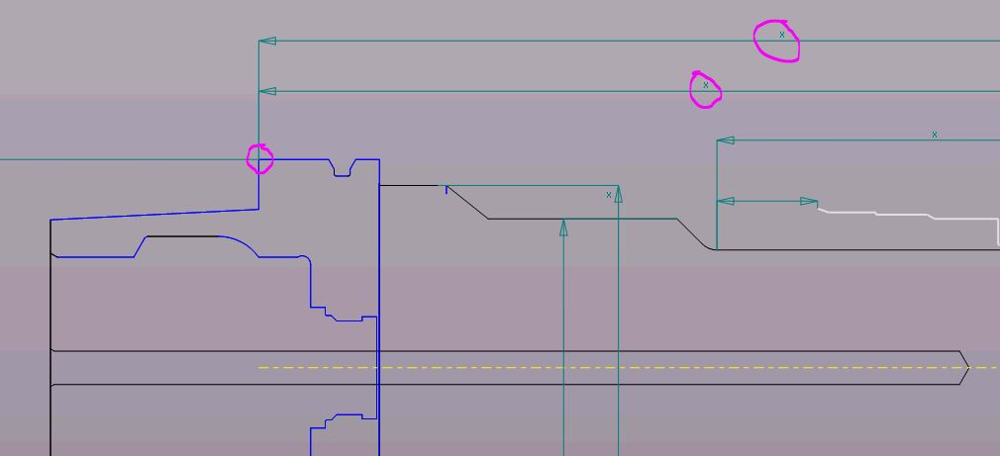
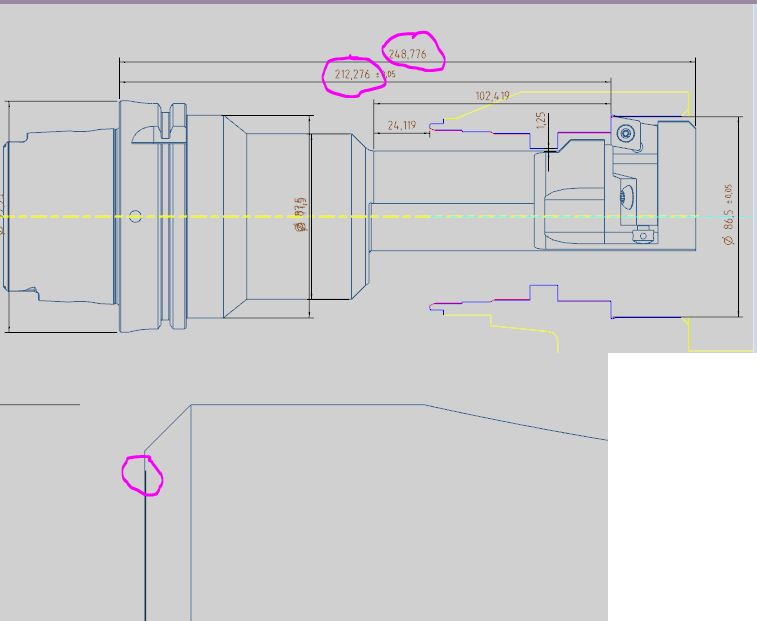
JAR 2017-12-18 I have modified the DXF, you might need to replace some dimensions but now it should be good.
2017/12/18 Veros dimension callout
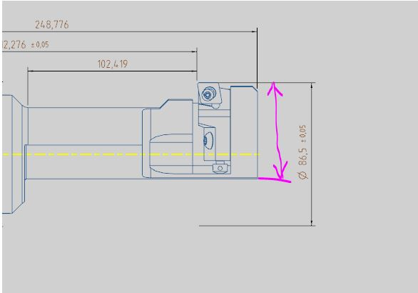
JAR 2017-12-18 fixed.
To add this dimension you need to follow these step:
create a wrong vertical dimension
then select it in the list on the top and rigth click on it
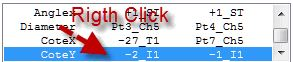
this box should appear at bottom right of the screen
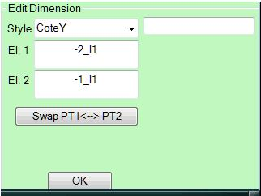
El. 1 and El. 2 are the attach of the dimension, when you click in the text box, a list will appear
look for the point (PT1) and the _ch* correspond to the chiproom number then if your excentric in the chiproom number 3 look for the point Pt1_Ch3
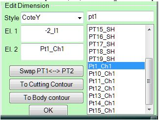
and the other El. should be on cutting contour.
the dimenssion will probably not look good in veros, but it should be in NX
2017/12/17 Title fetching problem
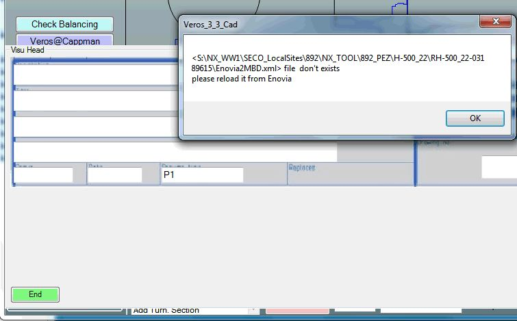
JAR 2017-12-18 fixed.
For this one, it seems that the XML was at wrong location I copy it into your tool folder it should work now, I will investigate deeper on this case.
if you have again such problem, you can solve this by going to Enovia in the corresponding product,
via the action menu, unlock it and then use again start MBD,then in the folder
\\cnshaveros\veros\NX_WW1\SECO_LocalSites\Enovia_Exchange\Import\CNSHAPETZ
you should find a folder with your tool name the XML is inside you just need to copy it into the tool folder
\\cnshaveros\veros\NX_WW1\SECO_LocalSites\892\NX_Tool\892_PEZ\H-500_22\RH-500_22-03189615
2017/12/17 SCGCR12CA-12 insert postion
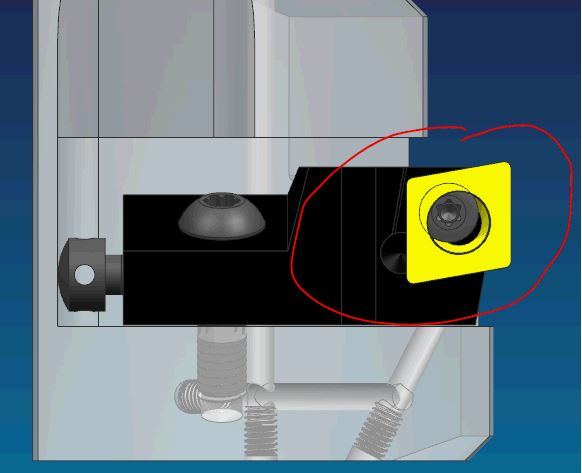
JAR 2017-12-18 fixed.
2017/12/17 V-cad button error in NX. The "NX Cad Start(NX85)" in Veros is OK.
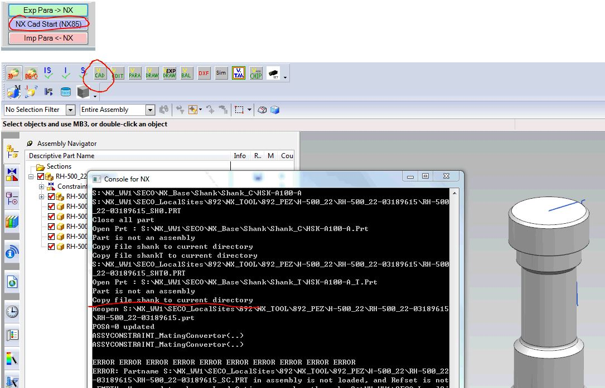
JAR 2017-12-18 That's look like a wrong setting in the load options. try to use the same as following.

2017/12/13 Not right CRA01 pocket for CC_T0602 insert
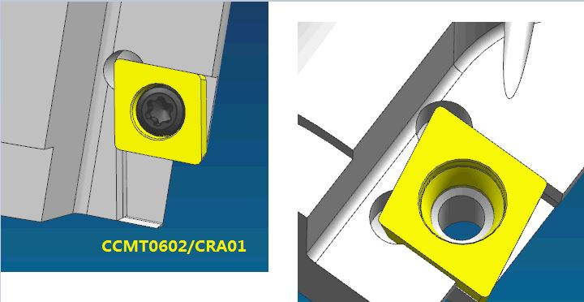
PZ 2017-12-22 模型已更新，但Veros中看不到刀片槽
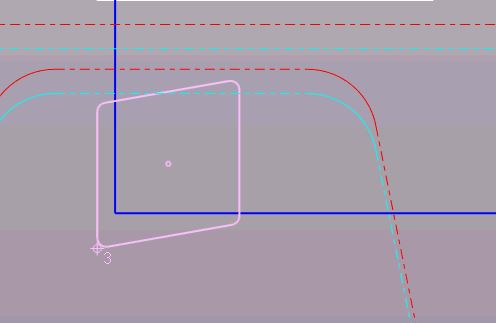
2017/12/5 Workpiece generation error in Drawing
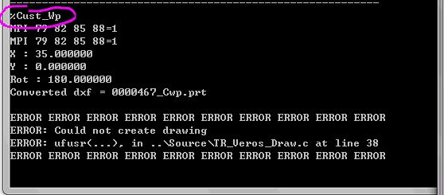
PZ 2017-12-12 fixed.